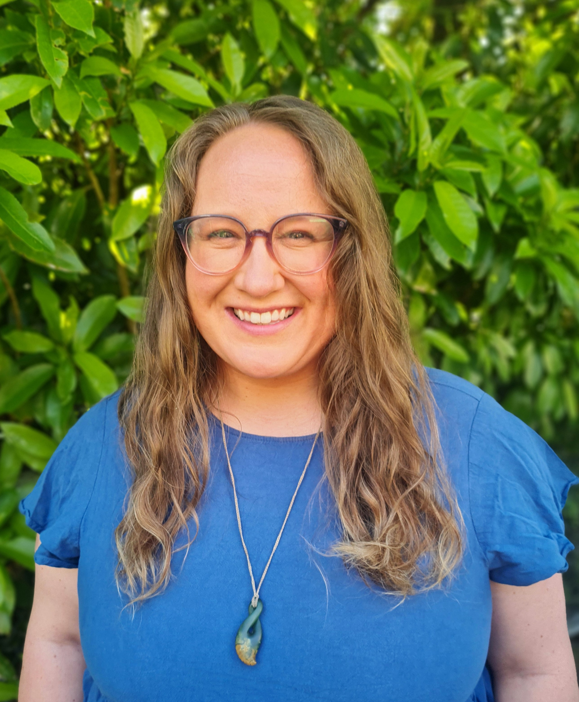
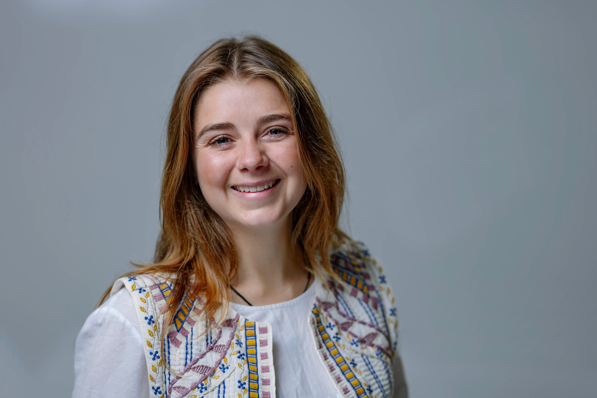

People
Dr. Alice Rogers (she/her)
Senior Lecturer in Fisheries Biology
Director, Victoria University Coastal Ecology Lab
Alice is a marine ecologist and quantitative fisheries scientist. She leads the MEEM Lab and the Coastal Ecology Lab at Victoria University of Wellington. Her research focuses on how climate change, fisheries, and other stressors impact coastal ecosystems, and how management can be improved to ensure these ecosystems survive and thrive for future generations. Alice completed her PhD at Imperial College London in 2011, studying the population dynamics of Caribbean sea urchins. Originally from central England, she has worked and dived in the UK, Honduras, French Polynesia, Australia, and New Zealand. Alice is passionate about interdisciplinary, collaborative science and works closely with iwi, government, and community partners. She is committed to mentoring students and fostering equity and diversity in marine science. Alice’s favourite fish is the harlequin sweetlips (Plectorhinchus chaetodonoides).
Current Lab Members
Postdoctoral Researchers & Research Assistants

PhD Candidates

Write a short bio below. You can use bold, italic, and links.
Example: Jane is a PhD student studying marine ecology. She loves coding and diving.
To reference the current projects page, use: project name
After completing a BSc in biochemistry at the University of Bath, Mollie went on to study for an MSc in conservation and biodiversity at the University of Exeter where her project focused on phenological shifts in green turtle nesting. Following her MSc, Mollie worked as a research assistant for the Convex Seascape Survey working to reduce uncertainties in global estimates of seabed disturbance by bottom trawling.
Mollie moved to Wellington from the UK in 2024 to join the MEEM lab. Her PhD research focuses on the contribution of Temperate Mesophotic Ecosystems, or TMEs, to coastal fish production in New Zealand. Mesophotic sponges (marine sponges found in the ‘middle light’ zone) are a dominant structure-forming species in these habitats and may act as a primary food source in the food web. Given this hypothesis, the aim of Mollie’s PhD research is to provide a body of evidence that demonstrates the reliance of some of New Zealand’s favourite fish species such as snapper, blue cod, and tarakihi on mesophotic sponges in terms of habitat provision and diet. Using a combination of techniques, including DNA metabarcoding, stable isotope analysis, and fatty acid analysis, Mollie will build a comprehensive understanding of the food webs and species interactions in TMEs. With this knowledge, Mollie will build an ecosystem model to understand the ecological importance of these habitats with regard to coastal fish productivity.Past Members
Dr. Anna Resende (2023 - 2026)
Dr. Manon Broadribb (2020 - 2025)
Danielle Willis-Kaio (2022 - 2024)
Dr. Francesca Strano (2024 - 2024)
Hiromi Beran (2022 - 2024)
Jay Streatfield (2021 - 2024)
Callum Long (2020 - 2022)
Victoria Carrington (2018 - 2022)
Andy Chang (2018 - 2021)
Baylee Wade (2018 - 2020)